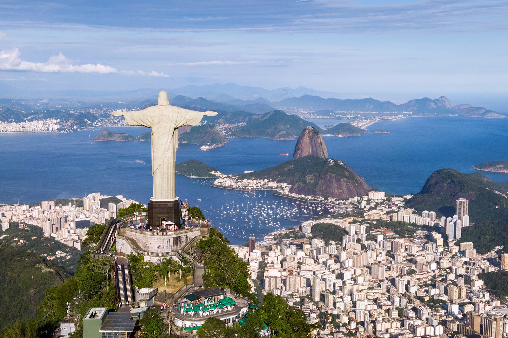
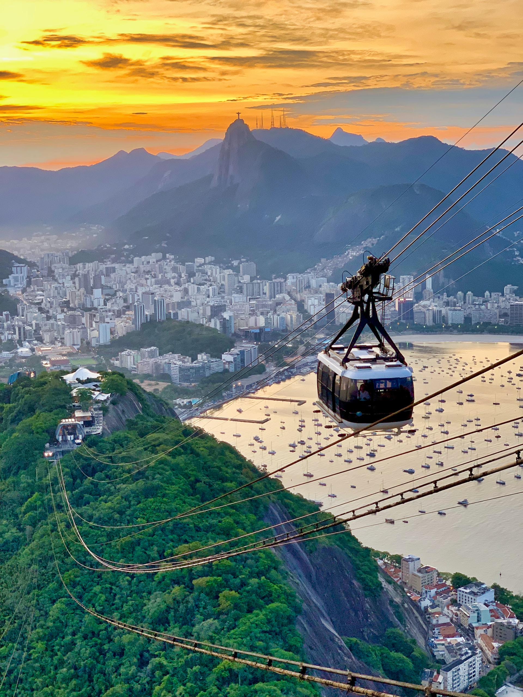
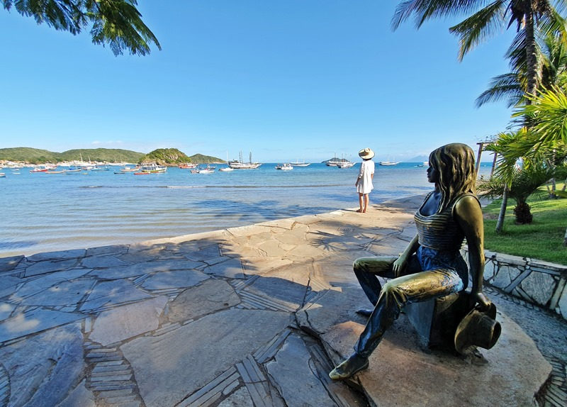
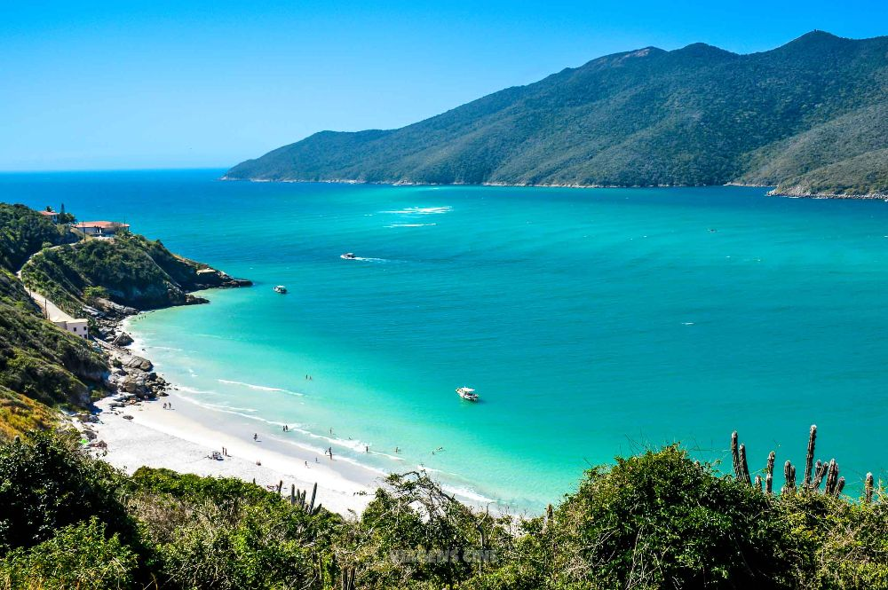

CRISTO REDENTOR:
Embarque em uma viagem inesquecivel ao Cristo Redentor enquanto se desfruta de uma estadia luxuosa em nosso hotel. Nosso pacote "Cristo Redentor sob o sol" combina conforto , cultura e experiencia unica no rio de janeiro.
PÃO DE AÇUCAR:
Embarque nessa aventura ao pão de açucar ao subir de teleférico que o levará ao topo da montanha lá você desfrutará de uma vista deslumbrante da Baía de guanabara e podendo ver tambem o cristo redentor uma experiência que você deve aproveitar se visita o rio. Nosso pacote "Pão de Açucar sob a lua combina de diversão, guia exclusivo e aventura nas alturas"
TOUR MARACANÃ:
Conheça o maior palco do futebol mundial, venha fazer o tour no Maracanã! Visitação todos os dias de 9h às 16h, no Maracanã (exceto em dias de jogo ou eventos no Maracanã).
Conhecer os bastidores do Maracanã e de quebra chegar próximo ao gramado sagrado do palco das finais de duas Copas do Mundo e de uma edição de Jogos Olímpicos é novamente possível. O que parece um sonho para muitos torcedores é realidade ao fazer o Tour Maracanã.
O passeio, tem duração de 45 minutos, em média. O Tour é uma das atrações mais procuradas pelos turistas que passam pelo Rio e pelos moradores da cidade.

TOUR BÚZIOS E MAR DE ARRAIAL PREMIUM
Visite os principais Pontos Turísticos de Búzios com transfer e guia privados e almoço num dos melhores restaurantes de Búzios: MADAME BARDOT
Visite os principais Pontos Turísticos de Arraial do Cabo, o Caribe Brasileiro com transfer e guia privados.
 